The midr package is designed to provide a model-agnostic method for interpreting black-box machine learning models by creating a globally interpretable surrogate of the target model.
The basic concepts underlying the package were developed as a functional decomposition technique called Maximum Interpretation Decomposition (MID).
For the theoretical details of MID, see Iwasawa and Matsumori (2025) [Forthcoming], and for the technical details of the midr package, see Asashiba, Kozuma and Iwasawa (2025) [Forthcoming].
Installation
You can install the released version of midr from CRAN with:
install.packages("midr") # not yet availableAnd the development version of midr from GitHub with:
# install.packages("devtools")
devtools::install_github("ryo-asashi/midr")Examples
The main function of the package is interpret(), which can be used to fit a predictive model consisting of a set of functions, each with up to two variables. The prediction function of a fitted MID model has the following structure:
where, is the intercept (zeroth-order effect, bias term), is the main effect of the feature , and is the second-order interaction effect between the two features and . The effects of quantitative variables are modeled as piecewise functions of degree 1 (piecewise linear function) or 0 (step function).
Fitting an MID Model to the Data
In the following example, we construct a MID model for the price of diamonds whose prediction function is the sum of eleven component functions: the intercept, four first-order main effects corresponding to each predictor variable (carat, clarity, color and cut), and six second-order interactions corresponding to each pair of the variables.
# required packages
library(midr)
library(ggplot2)
library(gridExtra)
library(ranger)
library(ISLR2)
theme_set(theme_midr())
# fit a two-dimensional MID model to the 'diamonds' data
data("diamonds", package = "ggplot2")
mid <- interpret(price ~ (carat + clarity + color + cut)^2, diamonds)
print(mid, omit.values = TRUE)
#>
#> Call:
#> interpret(formula = price ~ (carat + clarity + color + cut)^2,
#> data = diamonds)
#>
#> Intercept: 3932.8
#>
#> Main Effects:
#> 4 main effect terms
#>
#> Interactions:
#> 6 interaction terms
#>
#> Uninterpreted Rate: 0.025954It is easy to visualize each component function of the fitted MID model.
# main effects
grid.arrange(grobs = mid.plots(mid, limits = NULL))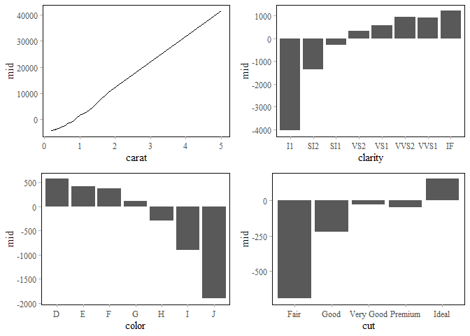
# interactions
interactions <- mid.terms(mid, main.effect = FALSE)
grid.arrange(grobs = mid.plots(mid, interactions, limits = NULL))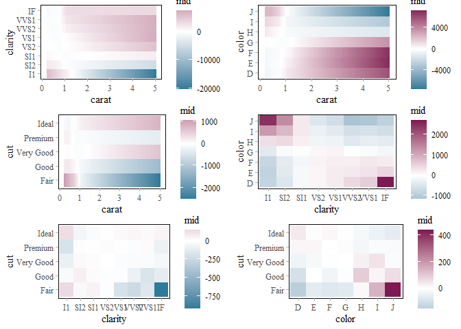
As another example, we fit a two-dimensional MID model of the Bikeshare dataset included in ISLR2.
# Bikeshare dataset
data(Bikeshare, package = "ISLR2")
set.seed(42)
train_rows <- sample(nrow(Bikeshare), nrow(Bikeshare) * .75)
train <- Bikeshare[ train_rows, ]
valid <- Bikeshare[-train_rows, ]
# fit a two-dimensional model
mid <- interpret(bikers ~ (mnth + factor(workingday) + hr +
weathersit + temp + hum + windspeed)^2,
data = train, lambda = .1, link = "log")The fitted MID model can be used to predict the number of bike rentals.
# predict the number of bike rentals
preds <- predict(mid, valid)
data.frame(actual = valid$bikers[1:12], predicted = preds[1:12])
#> actual predicted
#> 1 1 1.778831
#> 2 56 69.567642
#> 3 84 97.746876
#> 4 93 72.959132
#> 5 37 52.256667
#> 6 36 37.462328
#> 7 6 7.501908
#> 8 3 1.816990
#> 9 53 68.014476
#> 10 93 94.935711
#> 11 31 33.325104
#> 12 3 4.518049
# rmse loss
rmse <- function(x, y) {
cat("RMSE:", format(sqrt(mean((x - y) ^ 2)), digits = 6), "\n")
}
rmse(valid$bikers, preds)
#> RMSE: 40.0972
# main effects
plots <- mid.plots(mid)
grid.arrange(grobs = plots[1:4], nrow = 2)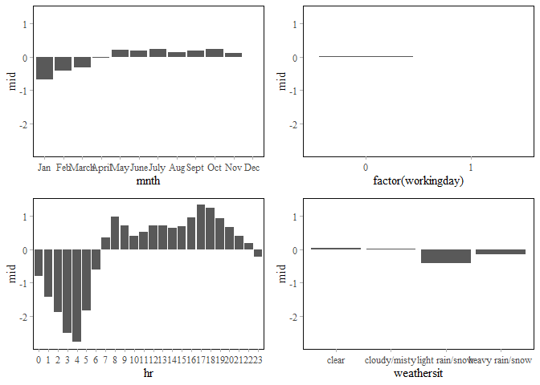
grid.arrange(grobs = plots[5:7], nrow = 1)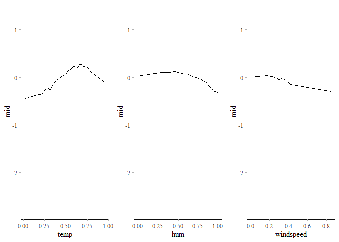
The importance of each component function of a MID model can be measured by and , i.e., the mean absolute effect of it. Drawing a heat map of MID importance is a useful way to find important two-way interactions.
# draw a heatmap of term importance
grid.arrange(nrow = 1L,
ggmid(mid.importance(mid), plot.main = FALSE, max.terms = 30L) +
geom_point(aes(shape = degree)) +
scale_shape_manual(values = c(16L, 1L)) +
theme_midr(grid = "y") +
theme(legend.position = "top"),
ggmid(mid.importance(mid), type = "heatmap") +
theme(legend.position = "top")
)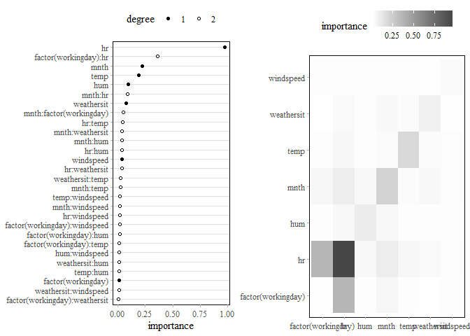
And in the visualization of the most important two-way interaction between hr and workingday, we can see the difference in the hourly pattern of bike rentals on weekdays and holidays due to the effect of commuting.
# visualize the most important interaction effect
grid.arrange(
ggmid(mid, "hr:factor(workingday)") +
labs(title = "interaction"),
ggmid(mid, "hr:factor(workingday)", include.main.effects = TRUE) +
labs(title = "interaction + main effects")
)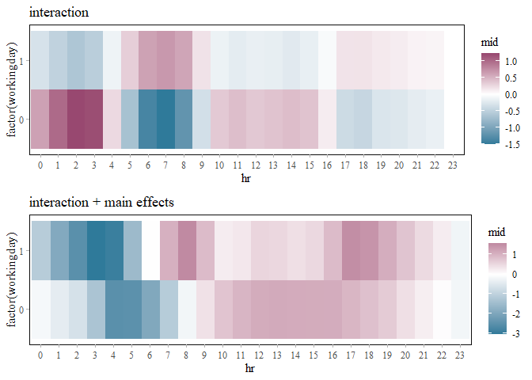
It is easy to generate individual conditional expectation (ICE) plots for the fitted MID surrogate model.
# create a mid conditional object
ice_rows <- sample(nrow(valid), 200L)
mc <- mid.conditional(mid, "hr", data = valid[ice_rows,])
# visualize the individual conditional expectation
grid.arrange(
ggmid(mc, variable.colour = factor(workingday), alpha = .2),
ggmid(mc, variable.colour = temp, centered = TRUE, alpha = .1)
)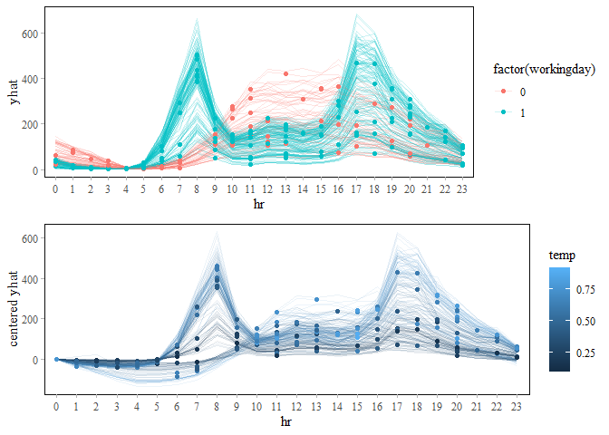
Fitting a MID Model as a Global Surrogate of the Target Model
In the next example, we construct a ranger model of wage based on the Wage dataset in ISLR2 and a MID surrogate of it.
# Wage dataset
data(Wage, package = "ISLR2")
set.seed(42)
train_rows <- sample(nrow(Wage), 2000)
train <- Wage[ train_rows, -10] # removing "logwage"
valid <- Wage[-train_rows, -10]
# construct ranger model with tuned parameters
set.seed(42)
model <- ranger(wage ~ ., train, importance = "permutation",
num.trees = 1000, mtry = 3, min.node.size = 13,
sample.fraction = .2281)
# RMSE loss
rmse(predict(model, valid)$predictions, valid$wage)
#> RMSE: 32.9839When the target model is passed to the argument model, interpret() replaces the response variable by the predictions obtained from the target model. Thus, the fitted MID model can be viewed as an interpretable model of the target model.
# MID surrogae or the ranger model
mid <- interpret(wage ~ .^2, train, model = model, ok = TRUE)
print(mid, omit.values = TRUE)
#>
#> Call:
#> interpret(formula = yhat ~ .^2, data = train, model = model,
#> ok = TRUE)
#>
#> Intercept: 112.54
#>
#> Main Effects:
#> 9 main effect terms
#>
#> Interactions:
#> 36 interaction terms
#>
#> Uninterpreted Rate: 0.012007
# RMSE as the interpretation loss
rmse(predict(mid, valid), predict(model, valid)$predictions)
#> RMSE: 2.75629To the extent that the MID model is acceptable as a surrogate for the target model, we can use the former to understand the latter.
# main effects
grid.arrange(grobs = mid.plots(mid))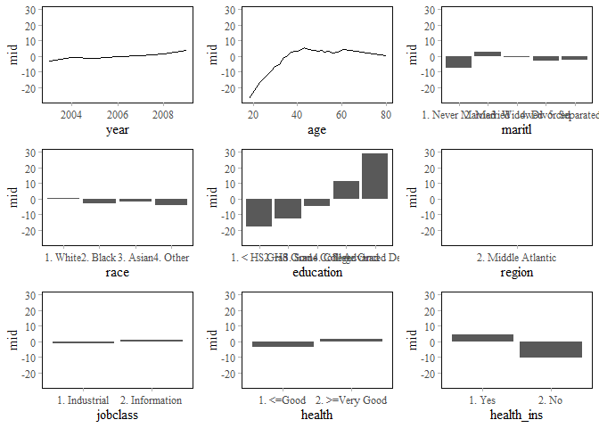
# important interactions
imp <- mid.importance(mid)
terms <- mid.terms(imp, main.effect = FALSE)[1:4]
grid.arrange(grobs = mid.plots(mid, terms = terms, limits = NULL))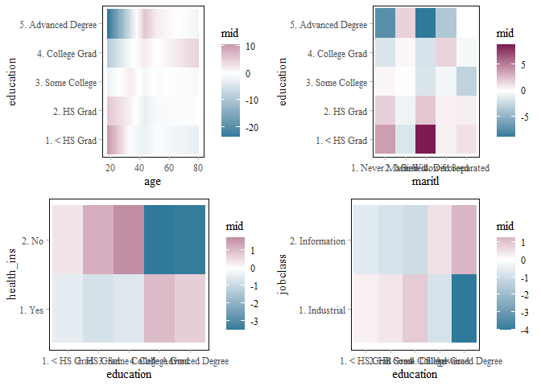
The following plot compares the MID importance plot of the fitted midr model with the permutation feature importance (PFI) plot of the target ranger model.
# permutation feature importance of variables
pfi <- sort(model$variable.importance, decreasing = FALSE)
pfi <- data.frame(variable = factor(names(pfi), levels = names(pfi)), importance = pfi)
# importance of the component terms
grid.arrange(nrow = 1,
ggmid(imp, max.bars = 12) +
labs(subtitle = "MID Model"),
ggplot(pfi, aes(y = variable, x = importance)) +
geom_col() +
labs(subtitle = "Target Model (PFI)", y = NULL)
)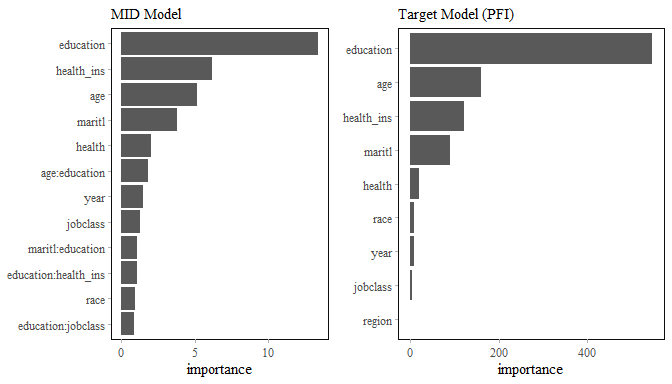
As the prediction function of the MID model is a sum of the simple component functions, the individual conditional effect can be decomposed into the effects of each term.
# create a mid conditional object
mc <- mid.conditional(mid, "education", train)
# visualize the effects of each component function
mc$conditional$education <- as.numeric(mc$conditional$education)
grid.arrange(
ggmid(mc, term = "age:education",
variable.colour = age, draw.dots = FALSE),
ggmid(mc, term = "maritl:education",
variable.linetype = maritl, draw.dots = FALSE),
ggmid(mc, term = "race:education",
variable.linetype = race, draw.dots = FALSE),
ggmid(mc, term = "education:health",
variable.linetype = health, draw.dots = FALSE)
)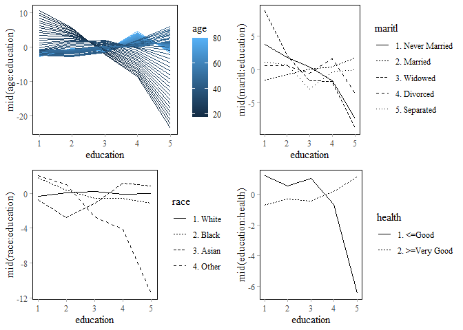